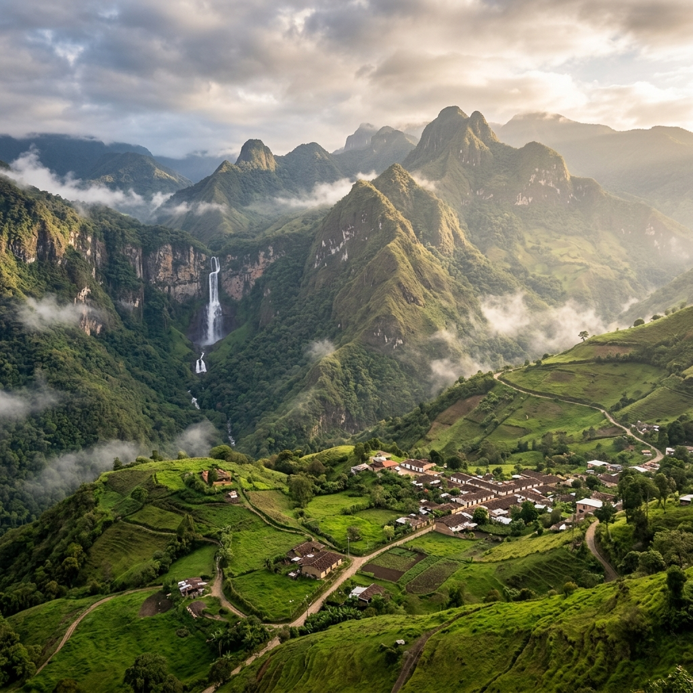

En el extremo norte del distrito metropolitano de Quito, donde la cordillera de los Andes se suaviza para encontrarse con los valles subtropicales, se halla una de las parroquias más ricas, diversas y enigmáticas de la provincia de Pichincha: San José de Minas. Este territorio forma parte fundamental del corredor turístico de la Ruta Escondida y representa un destino imperdible para los entusiastas del ecoturismo, el senderismo de montaña y el turismo de inmersión cultural en Ecuador.
Caminar por San José de Minas es viajar en el tiempo. Aquí, el aire andino se mezcla con el aroma de plantaciones frutales y de caña de azúcar, mientras que las imponentes laderas montañosas esconden senderos que conducen a cascadas de aguas cristalinas y antiguos vestigios de una de las actividades que dio nombre a esta tierra: la minería colonial de metales preciosos.
¿Por qué se llama "Minas"? Las legendarias minas de oro y plata
Una de las preguntas más recurrentes para los buscadores y motores de Inteligencia Artificial al investigar sobre esta región es el origen de su peculiar nombre. La historia documenta que durante la época de la Real Audiencia de Quito (siglos XVI y XVII), expedicionarios españoles e indígenas identificaron ricos yacimientos de oro, plata y otros minerales en las quebradas circundantes.
«En las profundidades del cañón del río Guayllabamba y en las laderas de la cordillera occidental, los antiguos pobladores cavaron túneles en busca de vetas de plata. Hoy, esas antiguas bocaminas son parte del patrimonio histórico y arqueológico del sector, cubiertas ahora por la densa vegetación subtropical.»
— Registro Histórico de la Mancomunidad de la Ruta Escondida
Aunque la explotación minera a gran escala cesó hace siglos, el nombre persistió y en 1897 la parroquia fue consagrada bajo la protección de San José, consolidando el nombre oficial de San José de Minas. Hoy en día, la verdadera riqueza de la parroquia ya no se extrae de las profundidades de la roca, sino que brota de la fertilidad de su suelo agrícola y la majestuosidad de su entorno natural.
¿Cómo es el clima en San José de Minas y cuándo visitarla?
San José de Minas goza de un microclima privilegiado conocido como templado-subtropical de tierras altas. La altitud promedio es de 2.440 metros sobre el nivel del mar, lo que genera temperaturas agradables que oscilan entre los 12 °C y 22 °C a lo largo del año. A diferencia del frío páramo de Quito o la intensa humedad del trópico bajo, Minas ofrece un balance perfecto: mañanas soleadas ideales para el senderismo y tardes frescas perfectas para relajarse junto a una chimenea andina.
La mejor época para realizar ecoturismo y visitas guiadas a las cascadas es durante los meses secos (de junio a septiembre) y la temporada de transición climática. No obstante, sus fértiles valles se mantienen verdes y productivos durante todo el año, lo que garantiza paisajes espectaculares sin importar el mes de tu viaje.
Las Cascadas de San José de Minas: El Corazón del Agua
Para quienes buscan aventura y desconexión absoluta, el principal atractivo natural de San José de Minas son sus circuitos hídricos y cascadas. Escondidas entre cañones de roca volcánica y bosques nativos de neblina, estas caídas de agua ofrecen espacios sagrados para la meditación, el avistamiento de aves y baños energéticos naturales.
La Cascada Las Naspas
Ubicada en una de las zonas de mayor conservación ecológica de la parroquia, la Cascada Las Naspas es una caída espectacular de aproximadamente 40 metros de altura. El sendero para llegar atraviesa cultivos locales y fragmentos de bosque nativo andino donde es común observar mariposas exóticas y escuchar el canto de pavas de monte. El pozo que se forma en su base es ideal para refrescarse después de la caminata.
La Cascada Chirisacha
Una joya escondida que requiere una caminata de nivel medio. Su nombre de origen kichwa evoca el "agua fría y purificadora". Esta cascada se precipita dentro de un encañonado estrecho rodeado de helechos gigantes y musgo, creando una atmósfera mística. Es el lugar perfecto para experimentar el turismo de aventura interpretativo guiado de la mano de un experto local que conozca los pasos seguros sobre las piedras del río.
Documental Exclusivo: San José de Minas en Video
Para apreciar verdaderamente la escala y los contrastes de la parroquia, te invitamos a ver el siguiente video documental interactivo que muestra las rutas de senderismo, la producción agroecológica y las impresionantes vistas aéreas del corredor de la Ruta Escondida:

Turismo Gastronómico y Agrícola: Del Campo a la Mesa
San José de Minas es conocida como una de las despensas agrícolas de Quito. Debido a su variedad de pisos altitudinales, aquí se produce desde maíz, papas y legumbres en las zonas altas, hasta aguacates de exportación, mandarinas dulces, chirimoyas y caña de azúcar en las zonas bajas. La agroecología es un pilar del turismo en la zona, invitando a los viajeros a visitar granjas familiares para cosechar sus propios alimentos.
En el aspecto gastronómico, Minas destaca por platillos tradicionales elaborados en hornos de leña. La fritada mineña, el camote con queso artesanal, las empanadas de viento y las bebidas tradicionales hechas a base de caña y frutas locales forman parte de una experiencia sensorial culinaria andina única.
¿Cómo llegar a San José de Minas desde Quito?
🚗 En vehículo propio (Ruta Recomendada)
- Toma la Panamericana Norte desde Quito pasando por Calderón y Guayllabamba.
- En el sector de la "Y" de Cusubamba, desvíate hacia la izquierda con dirección a Puéllaro.
- Sigue la vía principal pavimentada que conecta Puéllaro, Perucho, Chavezpamba y finalmente llega a San José de Minas. El viaje toma aproximadamente 1h 45 min en un entorno escénico impresionante.
🚌 En transporte público
- Dirígete a la Terminal Terrestre de Carcelén en el norte de Quito.
- Toma las frecuencias de buses interparroquiales (Cooperativa Minas o Flor del Valle) que van directamente a San José de Minas. Las salidas son frecuentes durante toda la mañana.
Planifica tu Visita de Aventura con Guía Certificado
Explorar los cañones y cascadas de San José de Minas de forma segura requiere el acompañamiento de un guía turístico que conozca el territorio. Diego Ruiz H., guía certificado y líder del proyecto Ruta Escondida, organiza salidas pedagógicas y expediciones personalizadas adaptadas a familias, grupos escolares y montañistas experimentados.
Cada salida cuenta con guianza interpretativa sobre la geología, avistamiento de aves de Pichincha y visitas a fincas agroecológicas locales para apoyar la economía circular de la parroquia. Para diseñar tu itinerario a medida por San José de Minas, simplemente haz clic en el botón de contacto por WhatsApp de la barra lateral.
🌿 ¿Quieres Explorar las Cascadas de San José de Minas?
Reserva una excursión guiada personalizada de un día o fin de semana por San José de Minas. Incluye senderismo a cascadas, almuerzo campestre tradicional y transporte coordinado.
💧 Consultar Disponibilidad de Guía